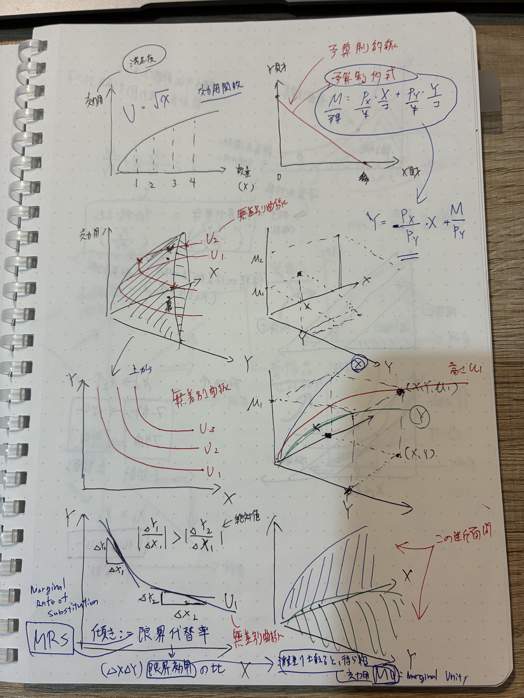
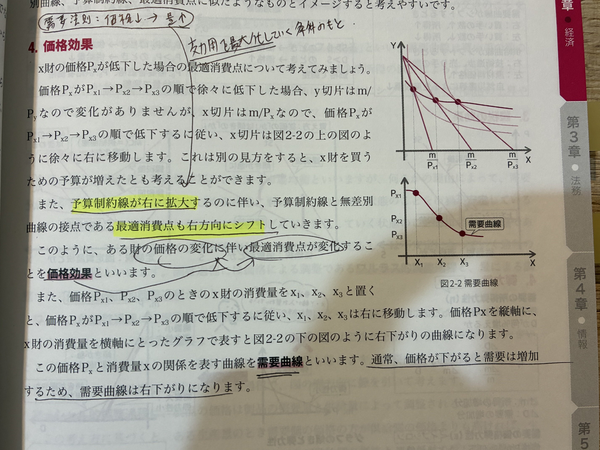
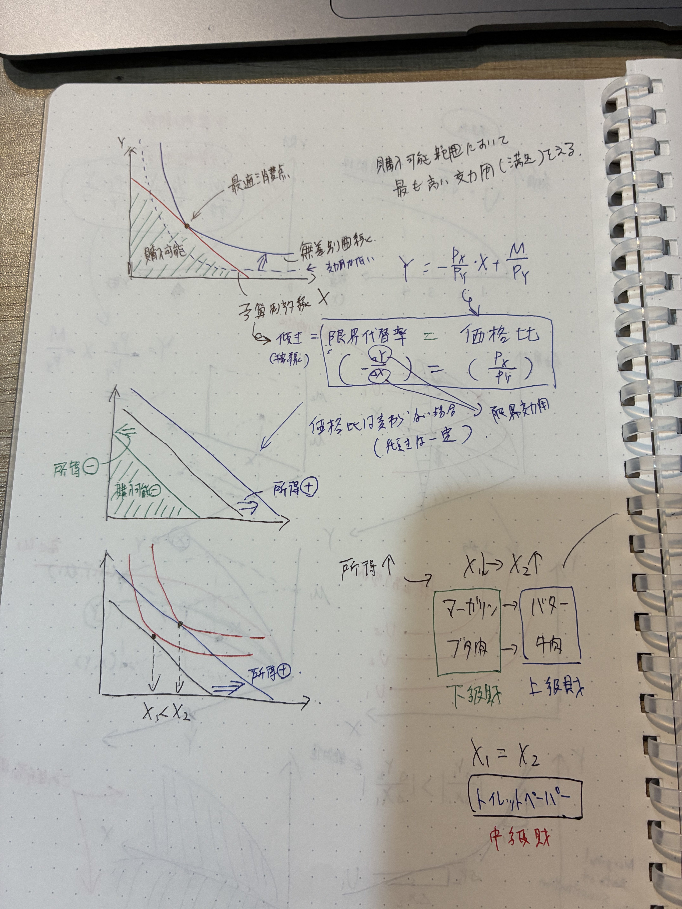

X財をx個、Y財をy個買うとき、支出は Px·x + Py·y。これを所得Mに収める。
導出：両辺をPyで割って整理。直線の式 y = ax+b の形にして傾きと切片が読み取れる。
予算制約線を 超えない範囲 で、効用が最も高くなる点が最適消費点。
予算ぴったり使い切るのが基本（残すと効用がもっと上がるはずだから）。
非飽和性の仮定：「もっと欲しい」気持ちが続く限り、お金を残しても効用は増えない。よって予算は使い切る。
予算制約線 と 無差別曲線 の 接点 が最適消費点。
そこでは「予算線の傾き＝無差別曲線の傾き」が成り立つ。

限界効用：MUx = a·X^(a-1)·Y^b、MUy = b·X^a·Y^(b-1)
MRS = MUx/MUy = (a/b)·(Y/X)
代表的な解の公式：a+b=1 なら X*=aM/Px、Y*=bM/Py。
→ 支出比率がパラメータ a, b に等しくなる（コブ＝ダグラスの著名な性質）。
効用最大化条件 MUx/MUy = Px/Py を変形すると、
X財に1円使うと得られる追加効用 と Y財に1円使うと得られる追加効用 が等しい状態。
価格効果＝代替効果＋所得効果（次の論点で詳しく）。
通常はこの2効果の合計で需要曲線は右下がりになる。
📌 ギッフェン財は所得効果が代替効果を上回る下級財。詳しくは m_010 で解説。
